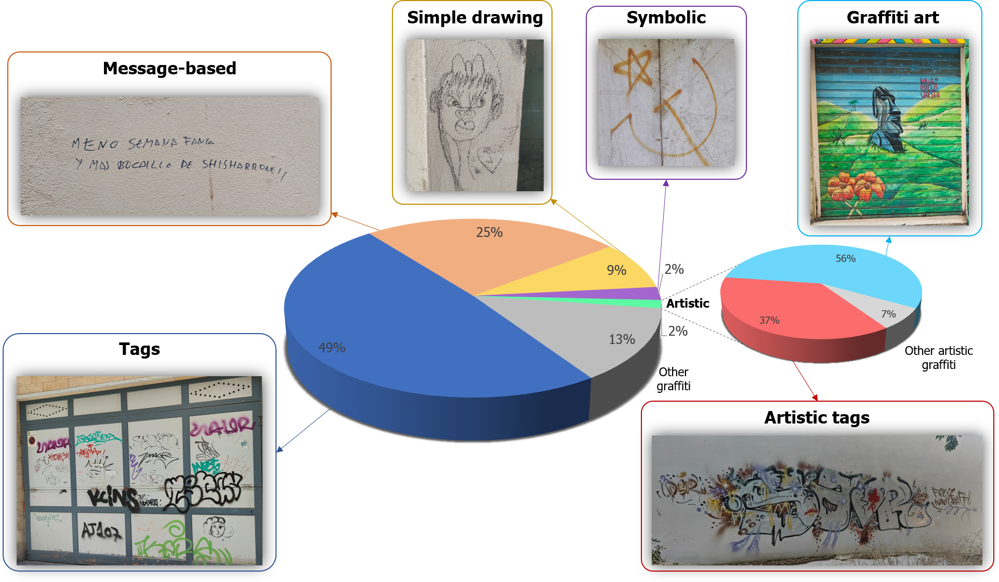

Contexto y metodología
Este proyecto se inició a raíz de mi Trabajo de Fin de Máster en Sistemas de Información Geográfica (SIG) de ESRI. El objetivo principal consistió en evaluar el impacto visual de los grafitis en el casco histórico de Cádiz.
La metodología de esta investigación se fundamentó en la recopilación exhaustiva de datos espaciales mediante la aplicación ArcGIS Field Maps. Este proceso de digitalización in situ requirió 31 jornadas de trabajo de campo para inventariar y georreferenciar más de 7.000 grafitis en el área de estudio.

Distribución de las intervenciones inventariadas según su tipología.
Índice de Impacto Visual de Grafitis
Previamente a la fase de campo, se diseñó una geodatabase estructurada con campos y dominios específicos destinados a aplicar una evaluación multicriterio a cada intervención. Esta evaluación se basó en seis variables determinantes:
- El tamaño de la intervención.
- El estado de conservación de los grafitis.
- La visibilidad.
- El entorno urbano.
- La naturaleza del mensaje.
- El valor del soporte arquitectónico afectado.
La inclusión de estos indicadores permitió formular el Índice de Impacto Visual de los Grafitis, cuyo análisis espacial posterior se materializó en la generación de diversos mapas de calor. Estas representaciones cartográficas sirvieron para evaluar tanto la densidad de distribución como la concentración del impacto a diferentes escalas urbanas (barrio, calle, manzana y edificio).
Aplicaciones interactivas
A partir de los resultados obtenidos, se diseñó un conjunto de aplicaciones orientadas a sensibilizar a la población sobre este fenómeno y proponer herramientas para mejorar el modelo de gestión municipal de pintadas.
Puedes explorar de forma interactiva todo el proyecto, los mapas resultantes y las aplicaciones diseñadas en el siguiente StoryMap:


 francisco.pinillos@uca.es
francisco.pinillos@uca.es
 LinkedIn
LinkedIn
 YouTube
YouTube